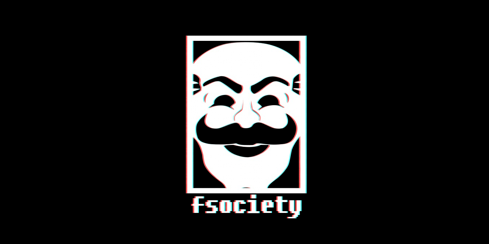

Les Bonus et Détails Cachés dans Mr. Robot
La série Mr. Robot regorge de références, easter eggs et secrets cachés qui rendent l’expérience encore plus riche pour les fans attentifs. Voici quelques-uns des meilleurs bonus à découvrir
- Anonymous & Wikileaks :
Le groupe fsociety rappelle fortement Anonymous, avec ses masques et ses attaques contre les grandes entreprises.
- Symbolisme Caché :
E Corp = Evil Corp : Tous les personnages l’appellent ainsi, ce qui brouille la frontière entre la réalité et la perception d’Elliot.